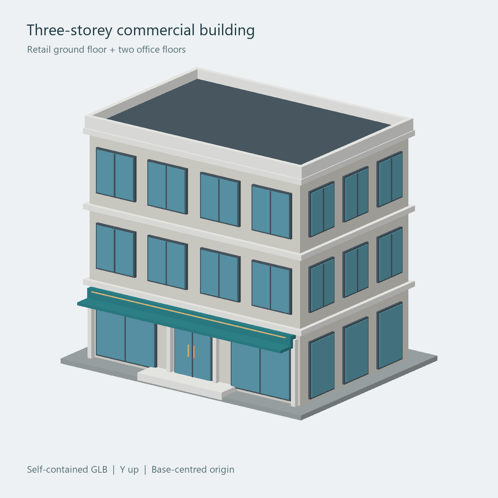

A LITTLE SPACE TO EXPLORE
A building.
A whole new
perspective.
Bring architecture off the screen and into your space. Point your camera at the marker and watch this building take shape.
No app to install. Your camera stays on your device.

Corner House
Commercial / Three storeysFROM SCREEN TO SPACE
Three steps. One new view.
- 01
Set the scene
Open the marker on another screen, or print it. Place it flat in good light.
- 02
Point your camera
Tap Start camera and allow camera access. Fit the whole marker in view.
- 03
Find a new angle
Move your phone slowly around the marker. Resize or turn the building as you explore.
A little help getting started
Use Safari on iPhone or Chrome on Android. Open this page directly in your browser rather than inside a messaging app.
If the camera is blocked, allow access in your browser’s site settings and try again. Keep the marker fully visible, avoid glare, and start around 30–60 cm away.
The marker must be on paper or a second screen. Your phone cannot scan a marker displayed on its own screen.